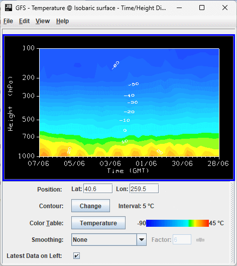

Overview
A Time/Height Display is a display of samples of a 3D parameter along a vertical profile line from top to bottom of the available data, with time as the independent coordinate (X-axis). Dependent on the field used in the display, available display options include Contour, Color Shaded, Flow, and Wind Barb Time/Height Displays. Note that the options in the Layer Controls will differ dependent on the field used to create the display.

Image 1: Time/Height Display and Controls Window
Image 1: Time/Height Display and Controls Window
Properties
- Position - Displays the map position of the vertical profile by the "Lat: Lon:" readout below the graph. Enter a value in the Lat and/or Lon fields and press Enter to set the value. The map position of the profile is shown in the Main Display window by a colored vertical line. There is a Selector Point on top of the vertical line which can be moved by dragging the Selector Point with the left mouse button.
- Contour - Represents the current contour interval. Click
 to open the Contour
Properties Editor to set contour information. The current contour interval used to display the data in the Main Display window is displayed after 'Interval'.
to open the Contour
Properties Editor to set contour information. The current contour interval used to display the data in the Main Display window is displayed after 'Interval'. - Color Table - Shows the active color table and the associated high and low data values in the units of the display. As the mouse pointer is moved over the color bar, the value at a particular color is shown. Right click on the color bar or click on the button that displays the name of the Color Table to make modifications to the color bar. This allows you to open the Color Table Editor, change the range, select other color tables, etc.
- Latest Data on Left - Reorders the X-axis of the display to show the latest data on the left when checked, and on the right when unchecked.
Menus
Many of the menu items seen utilizing this display are standard options that can be found in the Menus section of the Layer Controls page. However, there are some options that are unique to this display.
The Edit menu has these unique options:
- Change Parameter... - Opens a Field Selector window, which allows for the selection of a different parameter from the loaded Data Sources.
- Change Display Unit... - Opens a Change Unit window, which allows for the changing of the unit of the displayed parameter.
- Change Contours... - Opens the Contour Properties Editor, to change how the contours appear in the Main Display window.
The View menu has these unique options:
- Time/Height Display - Allows the user to change many aspects of the display shown in both the Main Display window, and in the Layer Controls tab of the Data Explorer.
- Probe - Allows the user to change many display preferences of the probe, see the View->Probe menu option on the Charts page.